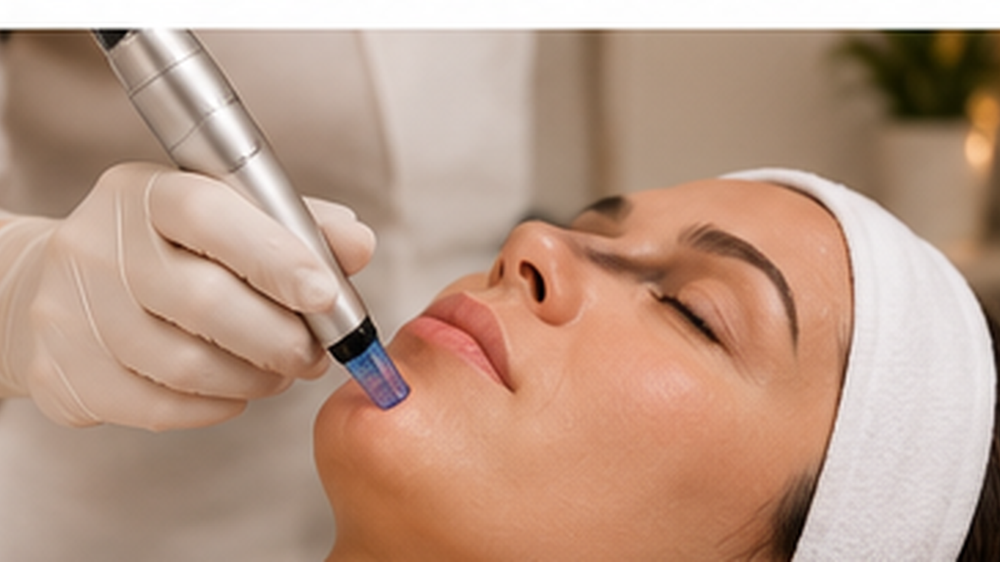

JOURNAL Microagulhamento: avaliação e histórico de saúde
Microagulhamento: quais medicamentos e condições informar antes?
Medicamentos, condições de saúde e histórico de cicatrização podem mudar as perguntas da consulta. Saiba o que relatar sem tentar decidir sozinho se o procedimento é indicado.

Este roteiro ajuda a preparar uma conversa, não diagnostica, define contraindicações universais ou substitui a avaliação do profissional responsável. Não suspenda, adie ou altere um medicamento prescrito para tentar se qualificar para um procedimento.
01 · Leve a lista completa
Medicamentos, suplementos e tratamentos recentes também contam
Informe medicamentos de uso contínuo e recente, suplementos, produtos aplicados na pele, alergias e tratamentos realizados ou planejados. Se possível, anote o nome, a dose e quando começou ou terminou — sem interromper nada para montar a lista. O objetivo é permitir que a profissional avalie o contexto e, quando necessário, peça orientação ao prescritor ou indique avaliação médica.
02 · Alguns medicamentos merecem conversa específica
Isotretinoína e remédios que afetam sangramento não têm uma regra online única
A FDA lista o uso atual de isotretinoína e o uso nos seis meses anteriores entre situações a discutir para os dispositivos de microagulhamento avaliados nos Estados Unidos. Isso não é uma regra brasileira universal nem substitui as instruções do aparelho real; fontes e procedimentos podem diferir. Informe também anticoagulantes, antiagregantes e qualquer medicamento associado a sangramento, e não os suspenda por conta própria. Cabe ao profissional responsável avaliar o caso e consultar quem prescreveu quando necessário.
03 · Conte condições que afetam pele ou cicatrização
Imunidade, diabetes, doenças de pele e cicatrizes anteriores precisam de contexto
Comunique condições que afetem imunidade, cicatrização ou controle glicêmico; eczema, psoríase ou outra condição ativa na área; tendência a cicatriz elevada ou queloide; e procedimentos ou tratamentos recentes. Essas informações não significam automaticamente que a pessoa possa ou não possa realizar microagulhamento. A decisão depende da condição atual, da área, do aparelho, da finalidade e da avaliação clínica adequada.
04 · Alergias e anestésicos
Relate reações anteriores, mesmo que tenham ocorrido em outro procedimento
Conte sobre alergias ou sensibilidades a anestésicos tópicos ou locais, metais, adesivos, antissépticos e produtos usados na pele. Se já houve urticária, inchaço, dificuldade para respirar ou outra reação importante, descreva o que aconteceu e quando. Não teste um anestésico ou produto novo em casa para antecipar a consulta.
05 · Informe gestação e outros tratamentos em curso
O contexto completo ajuda a escolher o próximo passo
Informe gestação, amamentação, tratamento oncológico ou imunossupressor, infecção recente e qualquer mudança de saúde desde a última consulta. A FDA inclui algumas dessas situações nas orientações para dispositivos autorizados nos EUA; a lista não estabelece, por si só, a conduta local. Se estiver em acompanhamento médico, compartilhe a informação com a profissional e siga a orientação clínica apropriada.
06 · Perguntas para levar
Uma conversa útil esclarece a relação entre o seu histórico e o plano real
Qual aparelho e finalidade estão sendo considerados? Há alguma instrução do fabricante relevante para meu histórico? É necessário conversar com o profissional que prescreveu um medicamento? Algum produto ou anestésico será utilizado, e como alergias serão consideradas? Que alternativa ou adiamento faz sentido se a avaliação levantar uma preocupação? Peça que as respostas se refiram ao dispositivo e ao protocolo que seriam usados, sem assumir que uma lista genérica determina sua elegibilidade.
07 · Referências e limites
O que as fontes permitem dizer
- FDA dos EUA: dispositivos de microagulhamento, informações para pacientes e situações a discutir
- FDA dos EUA: riscos e perguntas de segurança sobre microagulhamento
- American Academy of Dermatology: microagulhamento e cicatrizes
As orientações da FDA descrevem dispositivos avaliados nos Estados Unidos e ajudam a identificar informações que podem ser relevantes; não definem a regularização, o escopo profissional ou o protocolo da clínica no Brasil. Não use esta página para interromper medicamentos ou se declarar apto ou inapto.
Leituras relacionadas
Leve seu histórico à conversa
Uma consulta individual pode esclarecer quais informações e documentos são relevantes para o aparelho e o plano considerados.
Agendar consulta